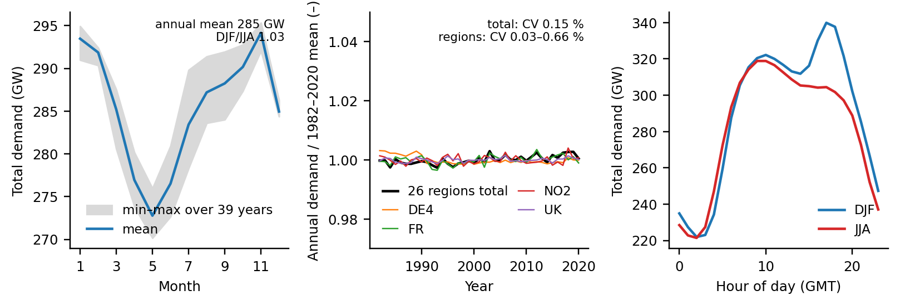
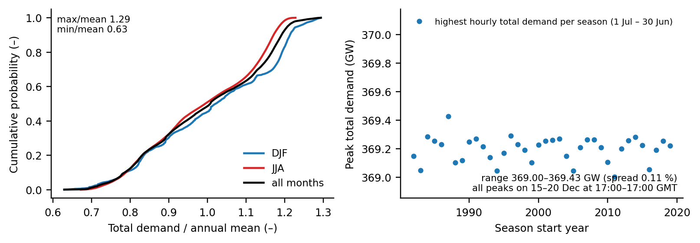
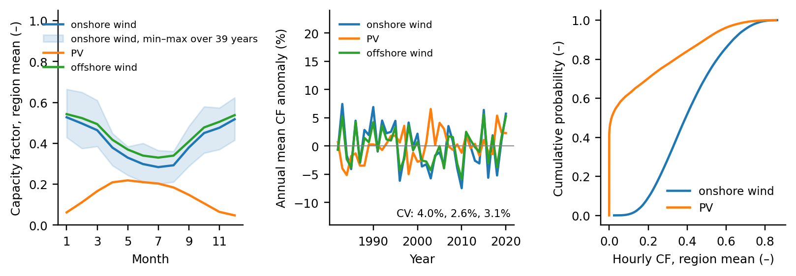
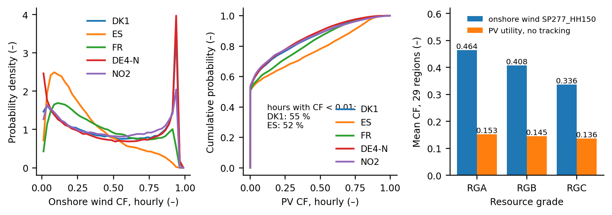
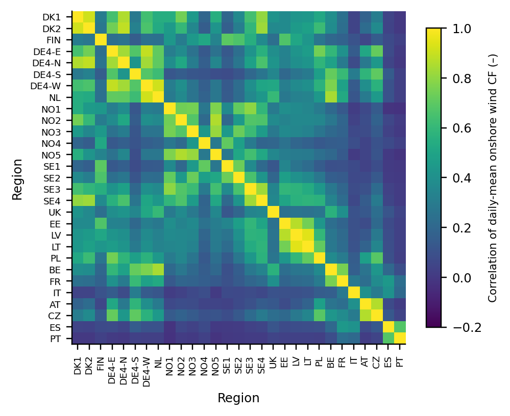
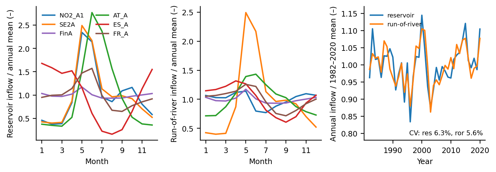
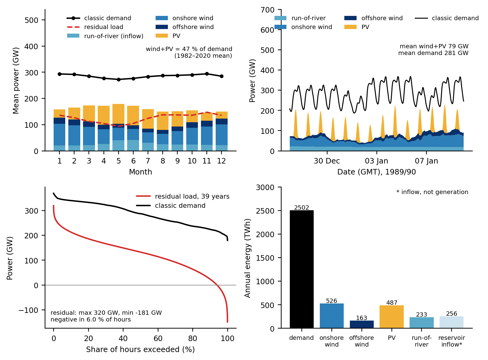
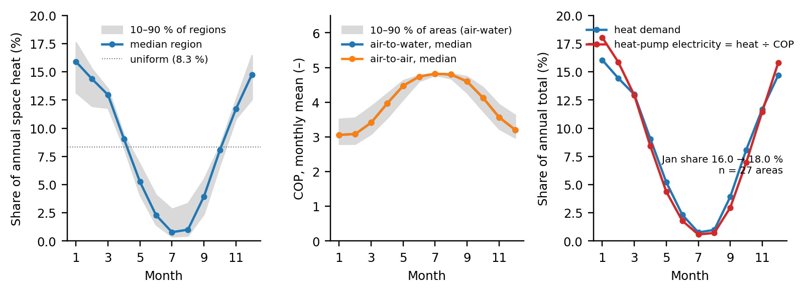
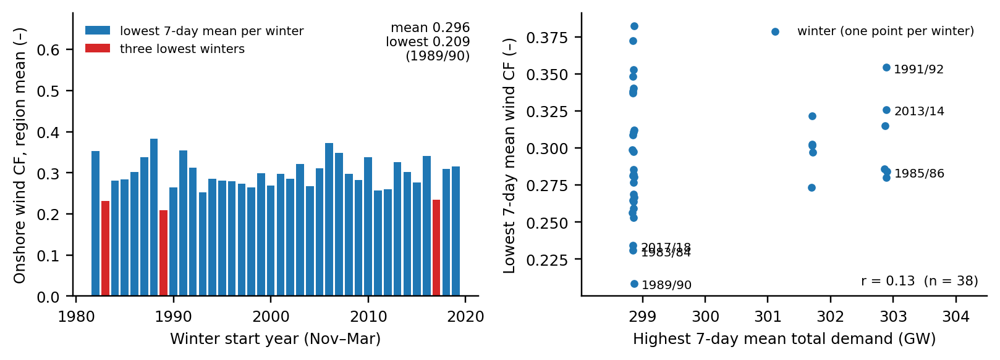

数据理解：Balmorel_DTU 数据（需求、风、光、水电）
项目 Time_Series_2026 · 更新：2026年11月23日 · 数据位置 ~/local_data/Balmorel_DTU/raw/（只读）· 统计窗口：1982年1月1日 00:00 至 2020年12月31日 23:00（GMT）· 计算脚本 ai_workspace/data_understanding/scripts/，表格在 01_data_understanding/tables/，图在 01_data_understanding/figures/
要点
- 数据是什么。DTU Data 合集“Pan-European weather dependent generation and demand time series for Balmorel Energy system modelling”（Nayak、Koivisto、Kanellas 2025，doi:10.11583/DTU.c.7964141），逐时、GMT，全部由同一套 ERA5 天气驱动；与 Shubham 使用的是同一批文件（2026年11月20日 MD5 核对）。本课题使用的时期：1982年1月1日至2020年12月31日，共 341,880 小时（39 个天气年）。
- 为什么选它（决定 D17）。需要电力需求：这是已找到的唯一与天气年一致、逐时、覆盖多国的需求；同一合集还有水电来水和风光，区域和时期相同，并可与 Shubham Nayak 的结果直接对照。
- 需求主要由日历决定，其中最大的是星期效应，不是季节。日历指“一年中的第几天”（季节）、“星期几”和节假日。26 个区域合计日平均需求的方差中：季节（一年中的第几天的多年平均）只解释 18%，星期效应再解释 76%，剩余 6%（含天气响应、节假日和随机项，本数据无法再分开）；扣除后日标准差只有 5.85 GW（占均值 2.0%），而陆上风电日距平标准差占均值 30%。每个季节的需求峰值都落在 12 月 15–20 日的 17:00 GMT，年际差只有 0.11%。
- 年需求几乎不变。26 个区域合计年需求变异系数 0.15%（陆上风电区域平均容量因子年均值为 4.0%，光伏 2.6%）。“classic”需求不含电采暖、电动汽车、电转 X 和氢（Kruse 2023 §4.1），所以与低温有关的电力需求增加不在其中。
- 风光都是逐时容量因子（0–1）。陆上风电 SP277_HH150 的区域平均容量因子随资源等级从 RGA 的 0.464 降到 RGC 的 0.336；选哪种技术和资源等级直接改变发电量，装机要另给。
- 水电来水：水库式为周常数、径流式为日常数（由日或周来水展开为逐时），25 个区域，readme 没有写单位，本页的数值按“10⁶ 单位”报告。
- 极端：区域平均陆上风电最低的 7 日平均容量因子出现在 1990-01-03 前后（0.209）；各冬季的最低风与最高需求基本无关（r = 0.13，n = 38），因为需求峰值由日历决定。
- Shubham 的 52 周天气年窗口在 7 个年边界各丢掉 7 天（共 49 天，1984、1990、1996、2001、2007、2012、2018 年末），所以事件识别不用它，用连续序列。
- 还没核实的：需求和水电的单位（readme 没写，按量级推断为 MW 和 MWh h⁻¹）；风光装机；热需求和热泵系数文件本页没有分析；气候预估没有对应的需求。
1. 数据从哪里来、怎样生成
下表只列已经读过的出处；读取范围标在最后一列。
| 部件 | 怎样生成 | 出处与读取范围 |
|---|---|---|
| 天气驱动 | ERA5 再分析（逐时），所有部件用同一套天气，保持变量间相关 | Nayak et al. 2026 §2.1 [全文已读]；Hersbach et al. 2020 |
| 风电、光伏 | CorRES 模拟；微尺度订正用全球风图集 GWA2，用替代功率曲线考虑风电场内尾流；多种风机技术（比功率、轮毂高度）和资源等级 | Nayak et al. 2026 §2.1.1；验证见 Nayak et al. 2025（Applied Energy 402:126882，未读） |
| 电力需求（classic） | ERA5 气温、星期、节假日、日照时长、小时的线性回归，由 ENTSO-E 2015–2018 年总负荷拟合、2019 年样本外检验（多数区域 MAPE 3–6%），用中心估计（确定性）；只含传统用电，不含电采暖、电动汽车、电转 X、氢 | Kruse 2023 硕士论文 §4.1、§4.2、§6.1.2 [第 4 章与 6.1 已读]；Nayak et al. 2026 §2.1.2 引用此方法。DTU 文件与该论文模型是同一版本：[推断，未核实] |
| 供热需求、热泵性能系数 | 加权度日法（75% 随气温变化，25% 与气温无关），再按 Balmorel 情景的年需求缩放；热泵参照 Ruhnau et al. 2019 | Nayak et al. 2026 §2.1.2；Kruse 2023 §4.3。本页未分析 |
| 水电来水 | GloFAS-ERA5 v4.0 河流流量，用 ENTSO-E 2015–2025 历史水库和径流发电数据，经随机森林加岭回归混合模型估计各天气年来水；留一年交叉验证 | Nayak et al. 2026 §2.1.3；数据 Liu & Rahmlow 2026（doi:10.5281/zenodo.18632738，未读）。Balmorel_DTU 的 readme 给出生成代码 github.com/Yil2/hydro_mopo |
| 区域与时间 | Balmorel 区域（北欧按竞价区，德国分 4 个区域，其余每国一个区域）；GMT 时间戳 | Nayak et al. 2026 §3、图 4；readme |
2. 有哪些数据（available）
| 数据 | 目录（~/local_data/Balmorel_DTU/raw/） | 区域数 | 覆盖时期 | 时间分辨率 | 单位 | 缺测 |
|---|---|---|---|---|---|---|
| 电力需求 classic_demand.csv | electricity_demand/ | 29 | 1982-01-01 至 2021-12-31 | 逐时 | 未写明（量级与德国峰值负荷一致，推断为 MW） | 无 |
| 陆上风电 SP277_HH150_RGB.csv（及 11 个同类文件） | wind_onshore/ | 49 | 1980-01-01 至 2021-12-31 | 逐时 | 容量因子 0–1 | 无 |
| 陆上风电 Existing.csv（2020 年现有风电场） | wind_onshore/ | 45 | 1980-01-01 至 2022-12-31 | 逐时 | 容量因子 0–1 | 无 |
| 海上风电 SP316_HH155_RGB.csv（固定式） | wind_offshore/Future_bottom_fixed/ | 38 | 1980-01-01 至 2021-12-31 | 逐时 | 容量因子 0–1 | 无 |
| 光伏（9 个文件：屋顶、公用事业无跟踪、有跟踪 × RGA–RGC） | solar_PV/ | 50 | 1980-01-01 至 2021-12-31 | 逐时 | 容量因子 0–1 | 无 |
| 水库式来水 res_inflow.csv | hydro_inflow/ | 25 | 1980-01-01 至 2021-12-31 | 逐时（周常数） | 未写明 | 无 |
| 径流式来水 ror_inflow.csv | hydro_inflow/ | 25 | 1980-01-01 至 2021-12-31 | 逐时（日常数） | 未写明 | 无 |
| 年校正系数 *_flh_fac.csv | hydro_inflow/ | 25 | 1980–2021（逐年） | 年 | 无量纲 | 无 |
| 供热需求、热泵性能系数 | heat_demand/、heat_pump_COP/ | – | 1980/1982–2021 | 逐时 | – | 未分析 |
本页统计一律限于 1982年1月1日至2020年12月31日；需求文件从 1982年1月1日开始，风光和水电从 1980年1月1日开始，所以 1980–1981 年没有需求，不进入事件目录。需求文件共 350,640 行，等于 40 年（含 10 个闰年）的小时数。
风光序列清单（11 个文件的逐列统计）
| 序列 | 区域数 | 起 | 止 | 最小 | 最大 | 1982–2020 平均 CF（全部区域） | 1982–2020 平均 CF（29 个公共区域） |
|---|---|---|---|---|---|---|---|
| onshore SP277_HH150 RGA | 49 | 1980-01-01 00:00 | 2021-12-31 23:00 | -0.0000 | 0.950 | 0.418 | 0.464 |
| onshore SP277_HH150 RGB | 49 | 1980-01-01 00:00 | 2021-12-31 23:00 | -0.0000 | 0.950 | 0.359 | 0.408 |
| onshore SP277_HH150 RGC | 49 | 1980-01-01 00:00 | 2021-12-31 23:00 | -0.0000 | 0.950 | 0.286 | 0.336 |
| onshore existing 2020 fleet | 45 | 1980-01-01 00:00 | 2022-12-31 23:00 | -0.0000 | 0.900 | 0.269 | 0.280 |
| offshore SP316_HH155 RGB (bottom-fixed) | 38 | 1980-01-01 00:00 | 2021-12-31 23:00 | -0.0000 | 0.950 | 0.440 | – |
| offshore existing 2020 fleet | 14 | 1980-01-01 00:00 | 2022-12-31 23:00 | -0.0000 | 0.900 | 0.407 | – |
| PV utility no tracking RGA | 50 | 1980-01-01 00:00 | 2021-12-31 23:00 | -0.0004 | 1.000 | 0.168 | 0.153 |
| PV utility no tracking RGB | 50 | 1980-01-01 00:00 | 2021-12-31 23:00 | -0.0004 | 1.000 | 0.161 | 0.144 |
| PV utility no tracking RGC | 50 | 1980-01-01 00:00 | 2021-12-31 23:00 | -0.0004 | 1.000 | 0.153 | 0.136 |
| PV utility tracking RGB | 50 | 1980-01-01 00:00 | 2021-12-31 23:00 | -0.0004 | 1.000 | 0.196 | 0.176 |
| PV rooftop RGB | 50 | 1980-01-01 00:00 | 2021-12-31 23:00 | -0.0003 | 0.997 | 0.125 | 0.112 |
光伏序列中夜间有极小的负值（最小 -0.0004），是数值噪声，使用前要截断为 0。没有大于 1 的值。
3. 覆盖区域
需求 29 个区域（其中德国 4 个区域 DE4-E/N/S/W 的列完全相同，每列都是全国需求，合计时只取一列，所以独立区域 26 个）；陆上风电 49 个区域、光伏 50 个、海上风电 38 个；水库式来水 25 个、径流式来水 25 个（水电德国 4 个区域同样完全相同；两类来水的区域不完全相同：只有水库式的 GR_A, HR_A, LV_Other_DH，只有径流式的 LV_RigaR, RS_A, UK_A）。需求区域全部有陆上风电和光伏列，所以 29 个需求区域可作公共区域集。
| 区域 | 需求 | 陆上风电 | 光伏 | 海上风电 | 水电 |
|---|---|---|---|---|---|
| AL | – | ✓ | ✓ | ✓ | – |
| AT | ✓ | ✓ | ✓ | – | ✓ |
| BA | – | ✓ | ✓ | – | – |
| BE | ✓ | ✓ | ✓ | ✓ | – |
| BG | – | ✓ | ✓ | ✓ | ✓ |
| CH | – | ✓ | ✓ | – | ✓ |
| CY | – | ✓ | ✓ | – | – |
| CZ | ✓ | ✓ | ✓ | – | – |
| DE4-E | ✓ | ✓ | ✓ | ✓ | ✓ |
| DE4-N | ✓ | ✓ | ✓ | ✓ | ✓ |
| DE4-S | ✓ | ✓ | ✓ | – | ✓ |
| DE4-W | ✓ | ✓ | ✓ | ✓ | ✓ |
| DK1 | ✓ | ✓ | ✓ | ✓ | – |
| DK2 | ✓ | ✓ | ✓ | ✓ | – |
| DK3 | – | – | – | ✓ | – |
| EE | ✓ | ✓ | ✓ | ✓ | – |
| ES | ✓ | ✓ | ✓ | ✓ | ✓ |
| ES1 | – | – | – | – | – |
| ES2 | – | – | – | – | – |
| FIN | ✓ | ✓ | ✓ | ✓ | ✓ |
| FR | ✓ | ✓ | ✓ | ✓ | ✓ |
| FR1 | – | – | – | – | – |
| FR2 | – | – | – | – | – |
| GR | – | ✓ | ✓ | ✓ | ✓ |
| HR | – | ✓ | ✓ | ✓ | ✓ |
| HU | – | ✓ | ✓ | – | – |
| IE | – | ✓ | ✓ | ✓ | – |
| IT | ✓ | ✓ | ✓ | ✓ | ✓ |
| IT1 | – | – | – | – | – |
| IT2 | – | – | – | – | – |
| LIE | – | ✓ | ✓ | – | – |
| LT | ✓ | ✓ | ✓ | ✓ | – |
| LU | – | ✓ | ✓ | – | – |
| LV | ✓ | ✓ | ✓ | ✓ | ✓ |
| LV_RigaR | – | – | – | – | ✓ |
| ME | – | ✓ | ✓ | – | – |
| MK | – | ✓ | ✓ | – | – |
| MT | – | ✓ | ✓ | – | – |
| NL | ✓ | ✓ | ✓ | ✓ | – |
| NO1 | ✓ | ✓ | ✓ | ✓ | ✓ |
| NO2 | ✓ | ✓ | ✓ | ✓ | ✓ |
| NO3 | ✓ | ✓ | ✓ | ✓ | ✓ |
| NO4 | ✓ | ✓ | ✓ | ✓ | ✓ |
| NO5 | ✓ | ✓ | ✓ | ✓ | ✓ |
| PL | ✓ | ✓ | ✓ | ✓ | – |
| PT | ✓ | ✓ | ✓ | ✓ | ✓ |
| RO | – | ✓ | ✓ | ✓ | ✓ |
| RS | – | ✓ | ✓ | – | ✓ |
| SE1 | ✓ | ✓ | ✓ | ✓ | ✓ |
| SE2 | ✓ | ✓ | ✓ | ✓ | ✓ |
| SE3 | ✓ | ✓ | ✓ | ✓ | ✓ |
| SE31 | – | – | – | – | – |
| SE32 | – | – | – | – | – |
| SE4 | ✓ | ✓ | ✓ | ✓ | ✓ |
| SI | – | ✓ | ✓ | – | – |
| SK | – | ✓ | ✓ | – | – |
| TR | – | ✓ | ✓ | ✓ | – |
| UK | ✓ | ✓ | ✓ | ✓ | ✓ |
| XK | – | ✓ | ✓ | – | – |
水电区域名与需求区域名不同（如 NO2_A1 对应 NO2，SE2A 对应 SE2，FinA 对应 FIN），上表已按名称对应；LV_Other_DH 与 LV_RigaR 都归入拉脱维亚。
4. 质量检查
- 缺测：需求、风光、水电全部为 0 个缺测值（水电 0 个）。
- 时间连续：需求文件逐时无间断（True）；时间戳为 GMT，没有夏令时间断。
- 需求无零或负值（0 个）。
- 德国 4 个区域的需求列完全相同（True），水电来水同样（True）。
- 水库式来水每个 ISO 周内取值个数的中位数为 1（周常数）；径流式为 7（日常数）。因此水电在日内和周内没有变化，事件识别在小时尺度上看到的水电变化是展开造成的。
- 风光容量因子上限：陆上和海上风电最大 0.95，现有风电场 0.90（功率曲线的饱和）。
5. 电力需求（classic_demand）
5.1 总体统计（26 个独立区域合计）
- 平均 285.4 GW；年需求 2502 TWh（单位若为 MW）；年需求变异系数 0.15%，年需求范围 2495–2509 TWh（1993年最小、2003年最大）；线性趋势 0.08% 每十年。各区域年需求变异系数 0.03–0.66%（中位数 0.10%）。德国年需求 470 TWh（469–472）。
- 小时极值：最大 369.4 GW（1987-12-18 17），最小 179.6 GW（2009-12-25 04）；1%–99% 分位 199–358 GW。最大日平均需求的前三天 1987-12-18 (314.1 GW), 1996-12-20 (314.1 GW), 1991-12-20 (314.1 GW)；日平均需求最大的 100 天全部在 12 月。
- 日需求的方差主要来自星期效应（日历的一部分）：日平均需求标准差 23.8 GW；扣除“一年中的第几天”的多年平均后 21.6 GW；再扣除星期效应后 5.85 GW（占均值 2.05%）；季节解释 18%、星期效应解释 76%，剩余 6%。“日历”是什么：这里指一年中的第几天（季节循环，包含该日多年平均的气温和日照）、星期几、节假日；日需求变化的其他来源有：天气（气温、风、云，通过采暖、制冷、照明；本数据的 classic 需求只保留气温的响应）、经济活动和结构性变化（年际趋势）、随机波动（本数据为确定性中心估计，没有）。注意“扣除第几天的多年平均”同时扣除了季节平均气温的作用，所以“季节”这一项里已含气温的气候态；“剩余”里才有当天气温偏离气候态的作用。星期效应（周一至周日，相对均值，GW）：+6.1, +13.9, +14.7, +14.4, +14.3, -22.9, -40.5。各区域扣除后的日标准差占其均值的 0.7–4.8%（中位数 2.1%）。作比较，区域平均的陆上风电、光伏、海上风电的日距平标准差分别占其均值的 30%、17%、26%。
- 每个季节（7月1日至次年6月30日，1982–2019 共 38 个）的最高小时需求出现在 12 月 15–20 日、17:00 GMT，且为周三至周五；数值 369.00–369.43 GW，年际差 0.11%。冬季最高的 7 日平均需求只取 298.8, 298.9, 301.7, 302.9 GW 这几个值，取决于圣诞节落在星期几。


5.2 各区域统计
年需求变异系数的定义：对 1982–2020 的每一年取全年平均功率，得到 39 个年值；变异系数 = 这 39 个年值的标准差（样本标准差，自由度 39−1）÷ 它们的平均值 × 100%。表中不同区域差别大（0.03%–0.66%），原因本页没有查明：意大利（0.66%）、西班牙（0.55%）、荷兰（0.37%）较大，荷兰的年值从 1984–86 年约 0.995 升到 2018–20 年约 1.01，有上升趋势，说明至少部分来自趋势或区域回归对气温的响应强弱不同；要核对需要各区域气温，PECD 气温尚未下载。
| 区域 | 均值 (GW) | 1% 分位 (GW) | 99% 分位 (GW) | 最大 (GW) | 最大出现时刻 (GMT) | 最小 (GW) | 年需求 (TWh) | 年需求变异系数 (%) | 冬季/夏季 |
|---|---|---|---|---|---|---|---|---|---|
| DK1 | 2.11 | 1.42 | 2.80 | 2.90 | 1991-12-20 16 | 1.33 | 18.5 | 0.16 | 1.05 |
| DK2 | 1.38 | 0.93 | 1.90 | 1.98 | 1996-12-19 16 | 0.83 | 12.1 | 0.08 | 1.10 |
| FIN | 8.15 | 6.57 | 9.57 | 9.79 | 1996-12-20 17 | 5.51 | 71.5 | 0.09 | 1.09 |
| DE4 (one of four identical columns) | 53.62 | 35.76 | 67.74 | 68.91 | 1991-12-20 17 | 32.19 | 470.1 | 0.14 | 1.04 |
| NL | 12.21 | 8.58 | 16.07 | 16.82 | 2002-12-20 16 | 7.75 | 107.0 | 0.37 | 1.09 |
| NO1 | 2.80 | 1.86 | 3.86 | 3.95 | 1996-12-20 16 | 1.67 | 24.5 | 0.05 | 1.24 |
| NO2 | 3.12 | 2.50 | 3.75 | 3.83 | 2013-12-20 07 | 2.32 | 27.3 | 0.14 | 1.11 |
| NO3 | 2.31 | 1.96 | 2.68 | 2.72 | 1996-12-20 07 | 1.72 | 20.2 | 0.12 | 1.09 |
| NO4 | 1.69 | 1.43 | 1.96 | 1.98 | 1983-01-07 14 | 1.26 | 14.8 | 0.06 | 1.09 |
| NO5 | 1.49 | 1.18 | 1.83 | 1.87 | 1985-12-20 07 | 1.09 | 13.1 | 0.07 | 1.20 |
| SE1 | 0.93 | 0.74 | 1.11 | 1.14 | 1984-12-20 16 | 0.69 | 8.1 | 0.03 | 1.13 |
| SE2 | 1.49 | 1.18 | 1.80 | 1.90 | 2012-01-06 15 | 1.06 | 13.1 | 0.03 | 1.10 |
| SE3 | 7.99 | 5.95 | 10.22 | 10.55 | 2001-12-20 16 | 5.35 | 70.1 | 0.04 | 1.12 |
| SE4 | 2.22 | 1.52 | 2.92 | 3.03 | 1996-12-20 16 | 1.35 | 19.5 | 0.06 | 1.13 |
| UK | 32.13 | 19.67 | 44.24 | 45.53 | 1985-12-20 17 | 16.22 | 281.7 | 0.07 | 1.05 |
| EE | 0.82 | 0.55 | 1.08 | 1.11 | 1984-12-20 15 | 0.47 | 7.2 | 0.11 | 1.12 |
| LV | 0.76 | 0.50 | 1.01 | 1.04 | 2000-12-20 16 | 0.43 | 6.7 | 0.19 | 1.08 |
| LT | 1.22 | 0.83 | 1.57 | 1.60 | 2013-12-20 16 | 0.74 | 10.7 | 0.23 | 1.06 |
| PL | 18.21 | 12.59 | 22.97 | 23.44 | 2008-12-19 17 | 10.66 | 159.6 | 0.10 | 1.05 |
| BE | 9.45 | 7.17 | 11.39 | 11.76 | 1985-12-20 17 | 6.62 | 82.8 | 0.05 | 1.05 |
| FR | 44.51 | 32.19 | 55.20 | 57.64 | 1987-12-18 18 | 29.22 | 390.2 | 0.15 | 1.05 |
| IT | 31.29 | 17.84 | 43.19 | 48.46 | 2017-08-04 14 | 14.32 | 274.3 | 0.66 | 0.91 |
| AT | 6.55 | 4.41 | 8.43 | 8.67 | 1985-12-20 16 | 3.23 | 57.4 | 0.15 | 1.05 |
| CZ | 6.86 | 4.89 | 8.36 | 8.54 | 1984-12-20 16 | 4.20 | 60.2 | 0.06 | 1.04 |
| ES | 26.63 | 17.54 | 34.25 | 37.37 | 2015-07-07 11 | 14.36 | 233.5 | 0.55 | 0.90 |
| PT | 5.42 | 3.75 | 7.05 | 7.37 | 2001-12-20 19 | 3.00 | 47.5 | 0.23 | 1.02 |
表中“DE4”是 DE4-E/N/S/W 四列中的一列（四列相同）。单位按量级推断为 MW，统计量转为 GW。完整表见 tables/demand_by_region_1982-2020.csv。
6. 风电和光伏的容量因子（CF）
6.1 总体统计（陆上 SP277_HH150_RGB、光伏公用事业无跟踪 RGB、海上固定式 SP316_HH155_RGB）
- 陆上风电：29 个公共区域平均 CF 0.408；最低 IT 0.273，最高 UK 0.518；冬季/夏季 1.76；各区域年均 CF 的变异系数 4.3–8.1%（中位数 6.1%）。区域平均序列的年均 CF 变异系数 4.0%（2010年 -7.5%，1983年 +7.4%）。
- 光伏：29 个公共区域平均 CF 0.145；最低 NO4 0.111，最高 ES 0.215；冬季/夏季 0.36；约 55% 的小时 CF 小于 0.01（夜间）；区域平均序列年均 CF 变异系数 2.6%。
- 海上风电：38 个区域平均 CF 0.440；最低 AL_OFF 0.211，最高 DE4-W_OFF 0.548；区域平均序列年均 CF 变异系数 3.1%。
- 资源等级和技术的影响（29 个公共区域平均）：陆上 SP277_HH150 为 RGA 0.464、RGB 0.408、RGC 0.336；光伏无跟踪为 RGA 0.153、RGB 0.145、RGC 0.136。现有风电场（2020 年）为陆上 0.280、海上 0.407（海上现有风电场区域数少，未限于公共区域）。
- 风电 CF 的小时分布在满发附近（约 0.95）有尖峰，在 0 附近也集中；这是功率曲线的饱和与切入所致，不是缺测。
- 空间相关：29 个区域日平均陆上风电 CF 的两两相关系数平均 0.33（10% 分位 0.05，90% 分位 0.68），冬季（12–2 月）平均 0.27；伊比利亚（ES、PT）与北欧、中欧几乎不相关。
图 3(a) 的检验：区域平均陆上风电 1 月 CF 的多年平均 0.53、最大 0.67（1983 年），我用独立代码重算得到相同结果，所以算法没有错。数值偏高的原因是：(1) 这是未来技术（比功率 277 W m⁻²、轮毂高 150 m）的 RGB 序列，不是现有机组；同样 29 个区域的 2020 年现有风电场 1 月平均 0.38、全年 0.28；(2) 简单平均给每个区域相同权重，英国 1 月平均 0.66，而葡萄牙 0.33；(3) 灰带是单月、39 年中的最大值。全年 0.41 的未来陆上风电与现有机组相比偏高，是否合理要对照 Nayak et al. 2025 的验证论文（未读）。



6.2 各区域统计
陆上风电 SP277_HH150_RGB（29 个公共区域）
| 区域 | 均值 | 标准差 | 5% 分位 | 中位数 | 95% 分位 | 最大 | 冬季均值 | 夏季均值 | 年均最小 | 年均最大 | 年均变异系数 (%) |
|---|---|---|---|---|---|---|---|---|---|---|---|
| DK1 | 0.474 | 0.312 | 0.033 | 0.450 | 0.944 | 0.950 | 0.588 | 0.354 | 0.429 | 0.529 | 5.1 |
| DK2 | 0.481 | 0.328 | 0.022 | 0.460 | 0.947 | 0.950 | 0.590 | 0.363 | 0.431 | 0.538 | 5.7 |
| FIN | 0.390 | 0.254 | 0.053 | 0.345 | 0.860 | 0.950 | 0.498 | 0.260 | 0.347 | 0.435 | 6.2 |
| DE4-E | 0.422 | 0.298 | 0.035 | 0.368 | 0.935 | 0.950 | 0.557 | 0.297 | 0.374 | 0.470 | 6.1 |
| DE4-N | 0.465 | 0.323 | 0.019 | 0.433 | 0.946 | 0.950 | 0.591 | 0.343 | 0.420 | 0.502 | 5.2 |
| DE4-S | 0.325 | 0.281 | 0.017 | 0.235 | 0.897 | 0.950 | 0.439 | 0.220 | 0.277 | 0.363 | 6.7 |
| DE4-W | 0.425 | 0.303 | 0.028 | 0.372 | 0.935 | 0.950 | 0.568 | 0.292 | 0.373 | 0.472 | 5.9 |
| NL | 0.433 | 0.320 | 0.018 | 0.377 | 0.945 | 0.950 | 0.578 | 0.298 | 0.369 | 0.484 | 6.1 |
| NO1 | 0.366 | 0.281 | 0.024 | 0.299 | 0.897 | 0.950 | 0.434 | 0.282 | 0.312 | 0.429 | 8.1 |
| NO2 | 0.464 | 0.300 | 0.036 | 0.447 | 0.926 | 0.950 | 0.550 | 0.355 | 0.410 | 0.521 | 5.4 |
| NO3 | 0.479 | 0.272 | 0.062 | 0.479 | 0.896 | 0.950 | 0.581 | 0.354 | 0.425 | 0.537 | 5.5 |
| NO4 | 0.517 | 0.255 | 0.106 | 0.521 | 0.910 | 0.950 | 0.606 | 0.393 | 0.464 | 0.572 | 4.3 |
| NO5 | 0.492 | 0.309 | 0.038 | 0.489 | 0.940 | 0.950 | 0.572 | 0.385 | 0.427 | 0.558 | 6.3 |
| SE1 | 0.375 | 0.265 | 0.038 | 0.319 | 0.867 | 0.950 | 0.469 | 0.271 | 0.317 | 0.421 | 6.5 |
| SE2 | 0.395 | 0.273 | 0.039 | 0.345 | 0.888 | 0.950 | 0.506 | 0.279 | 0.340 | 0.446 | 6.8 |
| SE3 | 0.402 | 0.281 | 0.038 | 0.349 | 0.909 | 0.950 | 0.522 | 0.269 | 0.355 | 0.461 | 6.8 |
| SE4 | 0.411 | 0.304 | 0.020 | 0.353 | 0.932 | 0.950 | 0.522 | 0.290 | 0.368 | 0.472 | 6.2 |
| UK | 0.518 | 0.268 | 0.100 | 0.516 | 0.930 | 0.950 | 0.638 | 0.389 | 0.443 | 0.577 | 5.1 |
| EE | 0.394 | 0.305 | 0.017 | 0.324 | 0.927 | 0.950 | 0.517 | 0.255 | 0.340 | 0.453 | 7.0 |
| LV | 0.394 | 0.292 | 0.025 | 0.331 | 0.916 | 0.950 | 0.512 | 0.258 | 0.350 | 0.447 | 6.5 |
| LT | 0.422 | 0.305 | 0.024 | 0.367 | 0.932 | 0.950 | 0.542 | 0.284 | 0.366 | 0.471 | 6.2 |
| PL | 0.400 | 0.277 | 0.046 | 0.342 | 0.910 | 0.950 | 0.527 | 0.271 | 0.358 | 0.448 | 6.6 |
| BE | 0.420 | 0.325 | 0.013 | 0.351 | 0.945 | 0.950 | 0.561 | 0.287 | 0.369 | 0.466 | 6.1 |
| FR | 0.412 | 0.267 | 0.058 | 0.364 | 0.888 | 0.949 | 0.531 | 0.284 | 0.378 | 0.451 | 4.6 |
| IT | 0.273 | 0.207 | 0.029 | 0.221 | 0.685 | 0.938 | 0.353 | 0.177 | 0.233 | 0.306 | 5.3 |
| AT | 0.328 | 0.258 | 0.025 | 0.261 | 0.837 | 0.950 | 0.398 | 0.250 | 0.295 | 0.360 | 5.5 |
| CZ | 0.353 | 0.273 | 0.020 | 0.290 | 0.876 | 0.950 | 0.458 | 0.238 | 0.312 | 0.398 | 5.8 |
| ES | 0.301 | 0.220 | 0.043 | 0.243 | 0.756 | 0.947 | 0.377 | 0.209 | 0.273 | 0.349 | 5.5 |
| PT | 0.288 | 0.244 | 0.018 | 0.218 | 0.799 | 0.950 | 0.340 | 0.248 | 0.257 | 0.322 | 5.7 |
光伏 公用事业无跟踪 RGB（29 个公共区域）
| 区域 | 均值 | 标准差 | 95% 分位 | 最大 | CF<0.01 的小时占比 | 冬季均值 | 夏季均值 | 年均变异系数 (%) |
|---|---|---|---|---|---|---|---|---|
| DK1 | 0.143 | 0.232 | 0.684 | 1.000 | 0.552 | 0.059 | 0.213 | 3.9 |
| DK2 | 0.149 | 0.243 | 0.719 | 1.000 | 0.552 | 0.062 | 0.219 | 3.9 |
| FIN | 0.119 | 0.206 | 0.607 | 1.000 | 0.573 | 0.035 | 0.184 | 5.0 |
| DE4-E | 0.138 | 0.217 | 0.635 | 1.000 | 0.544 | 0.072 | 0.191 | 5.6 |
| DE4-N | 0.134 | 0.218 | 0.643 | 1.000 | 0.553 | 0.059 | 0.194 | 4.6 |
| DE4-S | 0.156 | 0.237 | 0.693 | 1.000 | 0.536 | 0.100 | 0.199 | 4.1 |
| DE4-W | 0.136 | 0.215 | 0.630 | 1.000 | 0.544 | 0.070 | 0.190 | 5.5 |
| NL | 0.140 | 0.221 | 0.645 | 1.000 | 0.547 | 0.070 | 0.197 | 4.6 |
| NO1 | 0.137 | 0.230 | 0.682 | 1.000 | 0.564 | 0.063 | 0.189 | 4.5 |
| NO2 | 0.140 | 0.235 | 0.702 | 1.000 | 0.559 | 0.066 | 0.196 | 4.7 |
| NO3 | 0.126 | 0.209 | 0.610 | 1.000 | 0.560 | 0.046 | 0.173 | 4.5 |
| NO4 | 0.111 | 0.196 | 0.574 | 1.000 | 0.576 | 0.022 | 0.159 | 4.7 |
| NO5 | 0.139 | 0.231 | 0.680 | 1.000 | 0.557 | 0.061 | 0.188 | 4.4 |
| SE1 | 0.117 | 0.210 | 0.618 | 1.000 | 0.587 | 0.029 | 0.170 | 5.4 |
| SE2 | 0.126 | 0.214 | 0.631 | 1.000 | 0.566 | 0.046 | 0.178 | 5.2 |
| SE3 | 0.132 | 0.220 | 0.650 | 1.000 | 0.560 | 0.052 | 0.195 | 4.2 |
| SE4 | 0.134 | 0.220 | 0.647 | 1.000 | 0.558 | 0.054 | 0.199 | 4.1 |
| UK | 0.134 | 0.207 | 0.594 | 0.999 | 0.543 | 0.071 | 0.183 | 3.2 |
| EE | 0.133 | 0.223 | 0.661 | 1.000 | 0.560 | 0.046 | 0.204 | 4.3 |
| LV | 0.132 | 0.218 | 0.643 | 1.000 | 0.555 | 0.051 | 0.198 | 4.0 |
| LT | 0.130 | 0.214 | 0.633 | 1.000 | 0.552 | 0.055 | 0.190 | 4.4 |
| PL | 0.140 | 0.214 | 0.622 | 0.998 | 0.538 | 0.073 | 0.192 | 4.5 |
| BE | 0.140 | 0.223 | 0.657 | 1.000 | 0.546 | 0.074 | 0.192 | 4.9 |
| FR | 0.168 | 0.243 | 0.698 | 1.000 | 0.527 | 0.107 | 0.216 | 3.6 |
| IT | 0.199 | 0.272 | 0.753 | 0.981 | 0.521 | 0.142 | 0.250 | 2.5 |
| AT | 0.163 | 0.237 | 0.676 | 1.000 | 0.529 | 0.119 | 0.197 | 3.4 |
| CZ | 0.147 | 0.227 | 0.663 | 1.000 | 0.538 | 0.087 | 0.196 | 4.3 |
| ES | 0.215 | 0.295 | 0.816 | 1.000 | 0.521 | 0.164 | 0.262 | 2.7 |
| PT | 0.210 | 0.295 | 0.828 | 1.000 | 0.526 | 0.155 | 0.262 | 3.0 |
海上风电 SP316_HH155_RGB（38 个区域）
| 区域 | 均值 | 标准差 | 5% 分位 | 95% 分位 | 最大 | 冬季均值 | 夏季均值 | 年均变异系数 (%) |
|---|---|---|---|---|---|---|---|---|
| IE_OFF | 0.543 | 0.309 | 0.057 | 0.950 | 0.950 | 0.673 | 0.416 | 5.0 |
| PT_OFF | 0.335 | 0.259 | 0.019 | 0.858 | 0.950 | 0.374 | 0.327 | 5.5 |
| ES_OFF2 | 0.413 | 0.346 | 0.003 | 0.950 | 0.950 | 0.469 | 0.360 | 6.5 |
| UK_OFF | 0.539 | 0.272 | 0.108 | 0.940 | 0.950 | 0.657 | 0.413 | 4.7 |
| ES_OFF1 | 0.278 | 0.211 | 0.027 | 0.701 | 0.950 | 0.333 | 0.210 | 4.9 |
| FR_OFF1 | 0.483 | 0.323 | 0.037 | 0.947 | 0.950 | 0.605 | 0.364 | 4.6 |
| BE_OFF | 0.527 | 0.360 | 0.006 | 0.950 | 0.950 | 0.640 | 0.415 | 5.2 |
| NL_OFF | 0.544 | 0.339 | 0.028 | 0.950 | 0.950 | 0.658 | 0.422 | 4.7 |
| FR_OFF2 | 0.379 | 0.346 | 0.000 | 0.948 | 0.950 | 0.439 | 0.298 | 5.2 |
| NO3_OFF | 0.468 | 0.338 | 0.020 | 0.950 | 0.950 | 0.570 | 0.358 | 7.7 |
| NO5_OFF | 0.419 | 0.367 | 0.002 | 0.950 | 0.950 | 0.513 | 0.312 | 9.0 |
| NO2_OFF | 0.476 | 0.325 | 0.021 | 0.949 | 0.950 | 0.572 | 0.360 | 5.3 |
| DE4-W_OFF | 0.548 | 0.351 | 0.014 | 0.950 | 0.950 | 0.659 | 0.427 | 4.6 |
| DK1_OFF | 0.535 | 0.315 | 0.046 | 0.950 | 0.950 | 0.633 | 0.422 | 4.5 |
| IT_OFF2 | 0.329 | 0.352 | 0.000 | 0.950 | 0.950 | 0.420 | 0.228 | 7.8 |
| DE4-N_OFF | 0.518 | 0.351 | 0.009 | 0.950 | 0.950 | 0.633 | 0.401 | 4.9 |
| NO1_OFF | 0.382 | 0.345 | 0.000 | 0.949 | 0.950 | 0.483 | 0.268 | 7.4 |
| NO4_OFF | 0.478 | 0.255 | 0.090 | 0.909 | 0.950 | 0.581 | 0.350 | 4.6 |
| DE4-E_OFF | 0.510 | 0.351 | 0.011 | 0.950 | 0.950 | 0.609 | 0.403 | 5.4 |
| DK2_OFF | 0.509 | 0.333 | 0.022 | 0.950 | 0.950 | 0.616 | 0.391 | 5.3 |
| SE3_OFF2 | 0.461 | 0.358 | 0.003 | 0.950 | 0.950 | 0.565 | 0.339 | 6.9 |
| SE4_OFF | 0.513 | 0.316 | 0.044 | 0.949 | 0.950 | 0.606 | 0.399 | 5.5 |
| IT_OFF1 | 0.236 | 0.209 | 0.018 | 0.675 | 0.950 | 0.306 | 0.156 | 5.9 |
| HR_OFF | 0.322 | 0.297 | 0.008 | 0.914 | 0.950 | 0.388 | 0.217 | 5.2 |
| PL_OFF | 0.501 | 0.339 | 0.020 | 0.950 | 0.950 | 0.604 | 0.390 | 6.0 |
| DK3_OFF | 0.500 | 0.358 | 0.004 | 0.950 | 0.950 | 0.592 | 0.393 | 5.7 |
| SE3_OFF1 | 0.504 | 0.328 | 0.032 | 0.949 | 0.950 | 0.612 | 0.374 | 5.7 |
| SE2_OFF | 0.467 | 0.314 | 0.029 | 0.947 | 0.950 | 0.566 | 0.351 | 5.8 |
| FIN_OFF | 0.489 | 0.294 | 0.058 | 0.941 | 0.950 | 0.580 | 0.370 | 5.5 |
| GR_OFF | 0.359 | 0.236 | 0.051 | 0.782 | 0.950 | 0.438 | 0.314 | 4.5 |
| AL_OFF | 0.211 | 0.299 | 0.000 | 0.938 | 0.950 | 0.292 | 0.133 | 9.4 |
| LT_OFF | 0.485 | 0.353 | 0.006 | 0.950 | 0.950 | 0.597 | 0.360 | 5.9 |
| LV_OFF | 0.480 | 0.334 | 0.022 | 0.950 | 0.950 | 0.593 | 0.350 | 5.9 |
| EE_OFF | 0.480 | 0.339 | 0.017 | 0.950 | 0.950 | 0.589 | 0.347 | 6.1 |
| SE1_OFF | 0.422 | 0.349 | 0.004 | 0.949 | 0.950 | 0.489 | 0.323 | 7.1 |
| TR_OFF | 0.374 | 0.249 | 0.034 | 0.830 | 0.950 | 0.438 | 0.370 | 4.9 |
| BG_OFF | 0.335 | 0.324 | 0.002 | 0.945 | 0.950 | 0.463 | 0.213 | 5.7 |
| RO_OFF | 0.370 | 0.325 | 0.005 | 0.945 | 0.950 | 0.481 | 0.244 | 5.1 |
7. 水电来水
res）和径流式（ror）。逐时文件，但水库式在每个 ISO 周内为常数、径流式在每天内为常数，由周或日来水展开。单位 readme 未写明；挪威 NO2 水库式年来水量级（约 40×10⁶）与该区域水电年发电量（数十 TWh）一致，推断为 MWh h⁻¹，未核实。*_flh_fac.csv 是逐年、逐区域的年满负荷小时数校正系数。来水不是发电：径流式近似为不可调的发电，水库式要经过水库容量和调度才变成发电。- 合计（德国只计一次；水库式 22 个、径流式 22 个独立区域）：年来水水库式 285、径流式 259（10⁶ 单位）；年来水变异系数水库式 6.3%、径流式 5.6%；最小年水库式 1996、径流式 2003，最大年水库式 2000、径流式 2000。
- 季节性：北欧（NO2、SE2）水库式来水在 5–6 月（融雪）最大，冬季最小；阿尔卑斯（AT）6 月最大；西班牙（ES）冬春最大、夏季最小。北欧水库式来水在冬季（1–3 月）最少，与 12 月需求峰值同在冬季。

各区域统计
| 区域 | 类型 | 年来水 (10⁶ 单位) | 年来水变异系数 (%) | 来水最大月 | 来水最小月 | 逐时最大值 | 零值占比 |
|---|---|---|---|---|---|---|---|
| AT_A | 水库式 | 4.62 | 10.2 | 6 | 3 | 2355 | 0.000 |
| BG_A | 水库式 | 2.40 | 32.9 | 5 | 9 | 1375 | 0.000 |
| CH_A | 水库式 | 12.24 | 9.9 | 6 | 2 | 5330 | 0.000 |
| DE4-E_A | 水库式 | 13.47 | 4.6 | 6 | 2 | 2111 | 0.000 |
| ES_A | 水库式 | 21.17 | 24.9 | 1 | 8 | 13090 | 0.000 |
| FinA | 水库式 | 13.45 | 7.4 | 5 | 8 | 2180 | 0.000 |
| FR_A | 水库式 | 14.82 | 12.2 | 6 | 9 | 4129 | 0.000 |
| GR_A | 水库式 | 3.06 | 30.5 | 3 | 8 | 2440 | 0.000 |
| HR_A | 水库式 | 3.82 | 20.2 | 12 | 8 | 1960 | 0.000 |
| IT_A | 水库式 | 5.57 | 13.7 | 6 | 2 | 3430 | 0.002 |
| LV_Other_DH | 水库式 | 2.86 | 18.0 | 4 | 2 | 1474 | 0.000 |
| NO1_A1 | 水库式 | 6.91 | 12.9 | 5 | 2 | 8447 | 0.093 |
| NO2_A1 | 水库式 | 40.16 | 14.7 | 5 | 2 | 20250 | 0.008 |
| NO3_A1 | 水库式 | 14.45 | 9.7 | 6 | 2 | 10430 | 0.000 |
| NO4_A1 | 水库式 | 20.12 | 11.5 | 6 | 2 | 12080 | 0.000 |
| NO5_A1 | 水库式 | 26.36 | 13.0 | 6 | 2 | 16160 | 0.001 |
| PT_A | 水库式 | 3.48 | 31.3 | 1 | 8 | 3649 | 0.001 |
| RO_A | 水库式 | 7.19 | 18.4 | 5 | 1 | 2856 | 0.000 |
| SE1A | 水库式 | 19.07 | 12.6 | 6 | 3 | 11660 | 0.000 |
| SE2A | 水库式 | 37.21 | 16.6 | 5 | 2 | 22340 | 0.000 |
| SE3A | 水库式 | 10.85 | 17.7 | 5 | 2 | 4815 | 0.000 |
| SE4A | 水库式 | 1.53 | 22.5 | 3 | 7 | 596 | 0.001 |
| AT_A | 径流式 | 26.27 | 6.6 | 6 | 1 | 5182 | 0.000 |
| BG_A | 径流式 | 1.26 | 17.0 | 5 | 1 | 392 | 0.000 |
| CH_A | 径流式 | 1.89 | 6.7 | 7 | 2 | 459 | 0.000 |
| DE4-E_A | 径流式 | 13.47 | 4.6 | 6 | 2 | 2111 | 0.000 |
| ES_A | 径流式 | 8.19 | 11.4 | 4 | 9 | 1835 | 0.000 |
| FinA | 径流式 | 13.45 | 7.4 | 5 | 8 | 2180 | 0.000 |
| FR_A | 径流式 | 40.76 | 8.8 | 5 | 9 | 7831 | 0.000 |
| IT_A | 径流式 | 26.27 | 11.1 | 6 | 2 | 7157 | 0.000 |
| LV_RigaR | 径流式 | 2.86 | 18.0 | 4 | 2 | 1474 | 0.000 |
| NO1_A1 | 径流式 | 11.27 | 9.0 | 6 | 3 | 2040 | 0.000 |
| NO2_A1 | 径流式 | 5.98 | 8.0 | 5 | 7 | 1181 | 0.000 |
| NO3_A1 | 径流式 | 4.16 | 9.0 | 6 | 3 | 1095 | 0.000 |
| NO4_A1 | 径流式 | 1.79 | 6.2 | 6 | 2 | 429 | 0.000 |
| NO5_A1 | 径流式 | 2.25 | 11.2 | 6 | 3 | 608 | 0.000 |
| PT_A | 径流式 | 6.61 | 22.4 | 1 | 8 | 2719 | 0.000 |
| RO_A | 径流式 | 10.98 | 9.9 | 4 | 11 | 2693 | 0.000 |
| RS_A | 径流式 | 9.03 | 7.6 | 5 | 9 | 2189 | 0.000 |
| SE1A | 径流式 | 19.07 | 12.6 | 6 | 3 | 11660 | 0.000 |
| SE2A | 径流式 | 37.21 | 16.6 | 5 | 2 | 22340 | 0.000 |
| SE3A | 径流式 | 10.85 | 17.7 | 5 | 2 | 4815 | 0.000 |
| SE4A | 径流式 | 1.53 | 22.5 | 3 | 7 | 596 | 0.001 |
| UK_A | 径流式 | 3.52 | 13.3 | 1 | 7 | 1008 | 0.000 |
7b. 供需总图（基于当前数据）

- 年能量：需求 2502 TWh；陆上风电 526、海上风电 163、光伏 487、径流式来水 233 TWh；风光合计占需求 47%；剩余负荷平均 125 GW，最大 320 GW（1995-12-18 17），最小 -181 GW（6.0% 的小时为负，即风光多于需求）。最大的连续 7 日平均剩余负荷 214 GW，在 1996-12-12 前后。
- 现有风电场的平均容量因子：陆上 0.27、海上 0.44、光伏 0.16（按这里的装机加权）。
- 供给的日内形状：光伏每天一个尖峰，风电变化缓慢，水电（径流式）近似常数；需求有日内两峰和周内周期。
- 这个示意不含供热、电采暖、电动汽车、电转 X（见第 7c 节和第 10 节）。
7c. 供热需求、热泵性能系数（COP）
- 供热需求（
heat_demand/）是什么：各 Balmorel 区域或区域内的区域供热/个体供热的逐时归一化曲线（形状），不是绝对量；readme：未按年需求缩放，使用时要按年热需求缩放，另有逐年校正系数（heat_yearly_corr_factors_*.csv）。生成方法：度日法，75% 随气温变化（采暖）、25% 与气温无关（热水）[Kruse 2023 §4.3；Nayak et al. 2026 §2.1.2]。 - 是否只在冬天有：不是，但强烈集中在冬季。个体住宅采暖曲线（30 个区域）：冬季（12–2 月）日均值是夏季（6–8 月）的中位数 12 倍；6–8 月合计只占年量的 3.9%（中位区域）；约 14% 的小时为零（气温高于度日阈值）。1 月占全年 15.9%，7 月 0.8%（图 9a）。
- 热泵性能系数（COP，
heat_pump_COP/）：热泵每消耗 1 单位电能输出的热量，COP = 供热量 ÷ 耗电量，无量纲。热泵从室外空气取热，室外越冷，COP 越低，所以冬季 COP 低、夏季高：空气源热泵 COP 取值 2.03–4.84；月平均的中位区域从 1 月 3.1 升到 7 月 4.8（图 9b）。方法参照 Ruhnau et al. 2019 [Nayak et al. 2026 §2.1.2]。本数据里空气-水热泵与空气-空气热泵的 COP 文件数值完全相同（逐值核对前 5000 小时），所以两类热泵没有区分。 - “什么时候用热泵”：只有有热需求时才用，热需求集中在冬季，所以热泵用电集中在冬季，而冬季恰是 COP 最低的时候。热泵用电 ≈ 供热量 ÷ COP（图 9c）：1 月占全年热量的 16.0%，换算成电量占 18.0%，冬季比热量更集中；逐月峰值之比 1.13。这是 27 个可与 COP 对应的区域的中位值，只是形状；绝对用电量要用 Balmorel 基础数据里的年热需求和各技术的占比（本地未取得）。

7d. RGA、RGB、RGC 是什么；这些输入会不会给出装机
- 资源等级（resource grade，RG）：某技术的候选安装地点按资源好坏分级：RG A = 最好的 10% 地点，RG B = 次好的 10–50%，RG C = 最差的 50% [Mopo 项目文件 Info_about_VRE_time_series，陆上风电和光伏页]。每个 RG 有自己的容量因子序列（本数据中 A > B > C）。在 Shubham Nayak 的 Balmorel 设置中，RGA/RGB/RGC 对应模型的 RG1/RG2/RG3（`config.yml`）。Mopo 公开数据只模拟了 RG B。
- 这些输入会不会给出装机：不会。文件是容量因子曲线，不含装机。Balmorel 把每种技术和 RG 的组合当作投资候选：容量因子曲线决定每单位装机能发多少电，加上成本（`VRE_Tech_Costs`）和各区域各 RG 的潜力上限（`VRE_Potentials`，由可用面积 × 装机密度得到：陆上 1 MW km⁻²、海上 1.5 MW km⁻²、光伏 4 MW km⁻² [Mopo 项目文件 Info_about_VRE_costs_potentials…]），由模型优化出各区域各技术各 RG 的装机；也就是说装机是模型的输出，不是这些输入的结果。已有装机（2020、2025 年）是另一组输入（Mopo 的 capacity_*-existing.xlsx，国家和 Mopo 区域层面）。
- 对本课题的含义：不跑 Balmorel（D1），装机由我们设定（情景），同一套 CF 曲线配不同装机就得到不同的剩余负荷（D11）。
8. 极端
- 低风：区域平均陆上风电日均 CF 的最低值 0.059（1997-07-23，夏季）。冬季（11 月至次年 3 月）最低的 7 日平均 CF 为 0.209，在 1990-01-03 前后；按冬季分，最低的三个冬季是 1989/90（0.209）, 1983/84（0.231）, 2017/18（0.234）。
- 冬季日均 CF 的 10% 分位 0.308；连续低于它的最长时段（天，起始日）：9 d，1998-11-12, 7 d，1982-01-18, 6 d，2018-02-17, 6 d，1984-03-17。这是 29 个区域的简单平均，空间平均会缩短并减弱单个区域的低风时段；多国同时低风的特征要在事件目录里按国家单独计算。
- 需求与低风基本无关：区域平均日均风电 CF 与总需求的相关系数在冬季为 -0.02、全年为 0.11（去除季节循环后冬季 -0.01）；光伏与需求冬季 0.07、全年 -0.20。各冬季的最低 7 日风电 CF 与最高 7 日需求的相关系数 0.13（n = 38）。

9. Shubham 的 52 周天气年窗口：丢掉的跨年周
他的规则（rep_period_functions.py）：每年从 1 月第一个星期一 00:00 起取 52 周（8736 小时）。逐年计算得出，39 个年边界中 32 个首尾相接，7 个出现 7 天缺口；1982 年 1 月 1–3 日也在窗口之外。
| 年末 | 缺口起 | 缺口止 | 平均需求 (GW) | 平均风电 CF（区域平均） | 最低日均风电 CF |
|---|---|---|---|---|---|
| start 1982 | 1982-01-01 | 1982-01-03 | 247.1 | 0.443 | 0.384 |
| 1984 | 1984-12-31 | 1985-01-06 | 274.9 | 0.424 | 0.338 |
| 1990 | 1990-12-31 | 1991-01-06 | 274.9 | 0.650 | 0.459 |
| 1996 | 1996-12-30 | 1997-01-05 | 269.6 | 0.420 | 0.252 |
| 2001 | 2001-12-31 | 2002-01-06 | 274.9 | 0.547 | 0.458 |
| 2007 | 2007-12-31 | 2008-01-06 | 275.0 | 0.603 | 0.329 |
| 2012 | 2012-12-31 | 2013-01-06 | 275.1 | 0.551 | 0.363 |
| 2018 | 2018-12-31 | 2019-01-06 | 275.1 | 0.560 | 0.374 |
作比较：12 月 28 日至 1 月 6 日的多年平均需求 275.7 GW，区域平均陆上风电 CF 0.527；冬季（12–2 月）平均需求 290.0 GW。被丢掉的周落在冬季中间，其中 1984、1996 年末的风电 CF 低于这一多年平均。这些周内是否有事件，要等事件目录建立后用连续序列和 52 周窗口各算一遍才知道（todo C2e）。
10. 对研究的含义（Implication）
- 事件由风光变化和系统配置决定，需求主要提供季节与日历背景。剩余负荷的变化主要来自风光（日距平标准差占均值 30% 对 2%）。按剩余负荷定义的事件仍然成立，但事件的“冬季集中”主要是风光季节性和需求日历的叠加，不要把它解释为低温驱动的高需求 [推断：由需求的日历占比 94% 和日距平标准差对比得出，未做归因检验]。
- 不能用“需求最大的日子”当极端天气日。需求峰值是日历量（12 月 15–20 日，周三至周五，17:00 GMT），年际几乎不变；先验加入最大需求日对本课题的事件识别没有天气信息（与 Hilbers 2023 的结论一致的方向，未在此核实）。
- 为什么 classic 需求不含电采暖、电动汽车、电转 X 和氢，影响是什么。原因：这些负荷取决于系统的电气化程度，是模型要内生决定的量，不应预先写进输入的电力曲线；热需求单独给出、可调度，而 classic 电力被当作不可调 [Kruse 2023 §4.1]。影响：(1) 冬季没有热泵和电采暖用电，真实的 2050 年系统里这部分叠加在冬季晚间，会抬高冬季需求峰值；图 9c 显示热泵电量比热量更集中在冬季；(2) 低温与低风同时发生的事件在本数据的需求里体现不出来，事件会低估；(3) 年需求变异系数 0.15% 与气温几乎无关，电气化后需求才有明显的气温响应，也会改变 D4 里“需求的气候变化信号”；(4) 水电解、电动汽车是可调的，应当作灵活负荷处理，不是固定需求。这些都需要你决定是否加入（待办 A17）。
原条目：classic 需求不含电采暖、电动汽车、电转 X。低温时的电力需求增加（热泵、电采暖）不在其中；热需求和热泵性能系数在同一合集的heat_demand/、heat_pump_COP/，要用电气化情景才能转成电力需求。要不要加、怎样加，决定了事件目录是否包含“冷+无风”型事件，需要你决定（待办 C2d、B3 的延伸）。 - 气候变化部分（Q4）：classic 需求对气温的响应很弱，未来预估只能改变风光和水电；若需要需求的气候响应，必须另外建气温–需求模型，并保证历史与未来用同一方法。D4（需求和水电的气候变化信号比风光大）所指的气温响应主要在供热和制冷，不在 classic 需求里，要用热需求文件另行检验。
- 年需求几乎不变（变异系数 0.15%）：需求的年际变率在这套数据里被压低；与风光年均 CF 的变异系数 4.0%（风）和 2.6%（光）相比可以忽略。含义：在年尺度上，剩余负荷的年际变化来自风光和水电。
- 技术和资源等级是情景选择。同一区域 CF 从 RGA 到 RGC 变化约 31%（相对 RGB），因此计划里的“系统配置情景”必须同时写明风光的技术和资源等级，结论要对这个选择做敏感性检验（U2）。
- 区域集：以 29 个需求区域为公共集；水电只覆盖部分，其余区域的剩余负荷不含水电；德国只计一份；瑞士、希腊、巴尔干、爱尔兰有风光无需求，不进入事件目录。互联取各国合并时，要用独立的 26 个区域。
- 水电时间分辨率：周（水库式）和日（径流式）常数，事件识别里水电的小时变化是展开的结果；径流式水电在剩余负荷里给出的是日尺度的变化。
- 跨年冬季事件：事件识别用连续序列，不用 Shubham 的 52 周窗口（第 9 节）；自助法按 4 月 1 日至次年 3 月 31 日的冬季完整年份分块（研究计划第 3 节）。
- 时期：1982–2020，39 个天气年，需求文件限制了起点；风光和水电多出 1980–1981 年和 2021 年，可用于交叉检验但不进入事件目录。
11. 尚未核实或需要决定的
- 需求和水电来水的单位（readme 未写明）；风光装机量的来源（Mopo 2025 年区域装机与 Balmorel 区域的对应）。
- DTU 文件的需求是否就是 Kruse 2023 论文中的 classic 电力需求，以及是否施加了年校正系数：论文附录 J.2 给出的 classic 校正系数多在 1.000 ± 0.01 以内（1982–2007 年的表），与本文件的年需求变异系数同量级，但这一对应没有核实。
- 热需求和热泵系数文件没有分析；电气化情景没有定。
- 水电来水数据（Liu & Rahmlow 2026）和风光验证论文（Nayak et al. 2025）没有读。
- 区域平均的风光是简单平均，没有按装机加权；多国事件的特征要按国家计算。
- 2020 年 12 月之后的数据（2021 年）不在统计窗口。
12. 参考文献与读取范围
- Nayak S., Liu Y., Bahmani M., Olsen B.T., Amelin M., Koivisto M.J. (2026). Integrating long-term weather distributions into continental-scale energy system planning: impacts on adequacy and investment decisions. SSRN preprint, doi:10.2139/ssrn.7455543. [全文已读；§2.1、§2.2、§4.2、§5.2]
- Nayak S., Koivisto M.J., Kanellas P. (2025). Pan-European weather dependent generation and demand time series for Balmorel energy system modelling. DTU Data collection, doi:10.11583/DTU.c.7964141. [各数据项 readme 已读；数据本身已统计]
- Kruse J.C.R. (2023). Resilience of weather dependent energy systems under extreme generation and demand scenarios. Master’s thesis, DTU. PDF. [第 4 章、§6.1、附录 J.2 已读，其余未读]
- Grochowicz A., Bloomfield H.C., Victoria M. (2025/2026). Preparing for the worst / Resilience metrics to guide back-up investments in the power system during extreme weather. arXiv:2508.05163. [引言、讨论已读；用于“冬季事件多发于 11–2 月”]
- Nayak S., Simutis E., Murcia Leon J.P., Olsen B.T., Koivisto M.J. (2025). Validation of European wind generation time series simulation. Applied Energy 402:126882, doi:10.1016/j.apenergy.2025.126882. [元数据已核对 Crossref；未读]
- Ruhnau O., Hirth L., Praktiknjo A. (2019). Time series of heat demand and heat pump efficiency for energy system modeling. Scientific Data 6. doi:10.1038/s41597-019-0199-y. [元数据已核对；未读]
- Hersbach H. et al. (2020). The ERA5 global reanalysis. Q. J. R. Meteorol. Soc. 146:1999–2049, doi:10.1002/qj.3803. [元数据已核对；未读]
- Liu Y., Rahmlow U.M. (2026). Mopo Pan-European Hydropower Data. Zenodo, doi:10.5281/zenodo.18632738. [引自 Nayak et al. 2026；未读]
图按项目的图规则绘制：图例在坐标框内、无边框，坐标轴有量和单位，字号小于正文，统计量标在图上；保存为 220 dpi。图中数值与文中数值来自同一次计算（tables/results.json）。